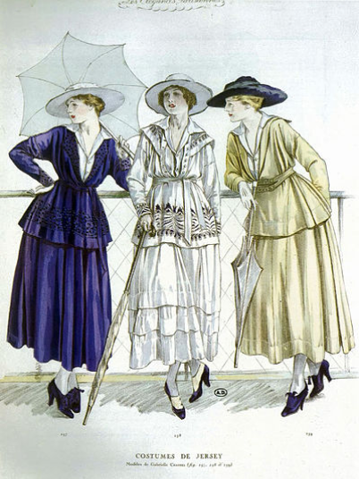
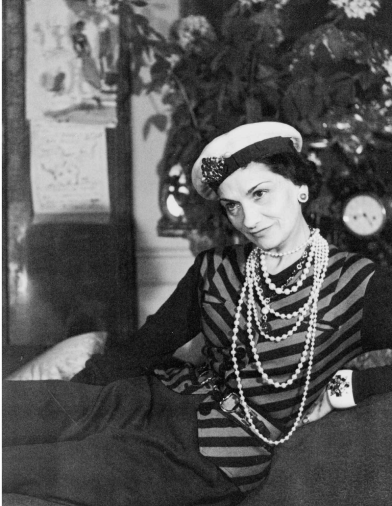

Legacy
"The woman who hasn't at least one Chanel is hopelessly out of fashion ... This season the name Chanel is on the lips of every buyer."
– Harper’s Bazaar, 1915
- 


- 
"The woman who hasn't at least one Chanel is hopelessly out of fashion ... This season the name Chanel is on the lips of every buyer."
– Harper’s Bazaar, 1915